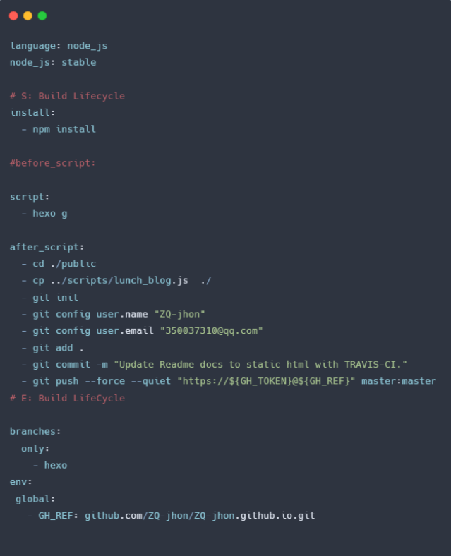

《GitHub 项目部署 & 持续集成》 实践分享
By SheenCity.PSG.zhangqiang
概要
- 0. git page 简介
- 1. 什么是持续集成
- 2. 持续集成的昨天
- 3. 持续集成的今天
What is git page
- https://github.com/ZQ-jhon/algorithm-docs/settings
- free static server & free host url
- Support public project only
人工部署的问题
- 敏捷吗？
- 解放了复杂劳动吗？
- 能够周期性运行吗？
什么是持续集成 (Continuous Intergration)？
特性
📑 翻译成人话
Better Practice
Travis CI flow
配置文件
能不能再贪心一点 ？
CI 的下一个形态 GitHub Action
核心概念
Github Action 特性
生态带来的强大的吸引力
配置 Demo
🌰Tanks!
- PPT Powerd by reveal.js
- Code2Image by carbon
- 本次分享 PPT 的源码 Source Code